Tableaux analytiquesIndex des noms propres Tableaux des personnages Répertoire
(autres noms propres)Glossaire Dictionnaire des fréquences Notes
Topographie du sitePlan du site Index de l'apparat critique Bibliographie Liens externes Liens vers Gallica
SupportGuide de la navigation FAQ Nouveautés Remerciements Auteur du site
Effacer les témoins
(cookies)X
Accueil Préface Choix éditoriaux Les Quatrièmes parties Les
IntroductionsAstréesposthumes L'Édition de Vaganay Présentation des textes Pleins feux sur
L'Astrée
Lecture de
L'AstréeI
Éd. de référenceepartie 1621 II
epartie 1621 III
epartie 1621 IV
epartie 1624
I
Éd. préliminaireepartie 1607 II
epartie 1610 III
epartie 1619
Éd. fonctionnelleavec gravuresI
epartie II
epartie III
epartie IV
epartie
en Word
Éd. téléchargeableen Word
Chronologie historique
Résumédes intrigues
APPARAT CRITIQUEÉvolution de
Le romanL'AstréeVariantes confrontées Variantes, I
epartie Variantes, II
epartie Variantes, III
epartie Analyse des illustrations Parallèles suggérés Résumé des intrigues Chronologie historique Témoignages Du Crozet Sorel Guéret Poèmes de Lingendes
Biographie Biographes, critiques Événements Généalogie Testament Inventaire Héritages Poèmes Épîtres Lettres Remarques
Le romanciersur Malherbe
Bibliographie Liens externes Liens vers Gallica Cartothèque Galerie de portraits Film d'Eric Rohmer Partitions d'A. Naigeon Photos du Forez
Ressources
«
@
»
X
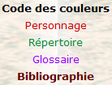
avancéeRecherche ciblée Fils d'Arianne Hyperbase (É. Brunet) Accès aux pages/folios Concordances-Vaganay
police condenséeL'AstréeRésumé du roman Chronologie historique Choix éditoriaux Présentation des textes Évolution Illustrations
L'Astrée
L'Astrée fonctionnelle
L'Astrée

Livre 2

Livre 4
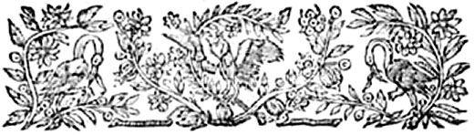
L'Astrée
d'Honoré d'Urfé
Troisième partie
Livre 3
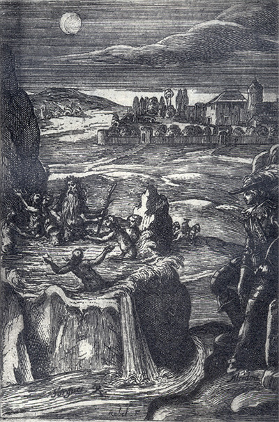
Gravure signée Rabel
La vision d'Alcidon : à côté la rivière de Sorgues,
on voit les Naïades et le Démon de Sorgues (III, 3, 101 recto)
L'AstréeIII, 3. Édition Vaganay**, 1925Gravure signée Rabel
La vision d'Alcidon : à côté la rivière de Sorgues,
on voit les Naïades et le Démon de Sorgues (III, 3, 101 recto)
(Voir Illustrations)
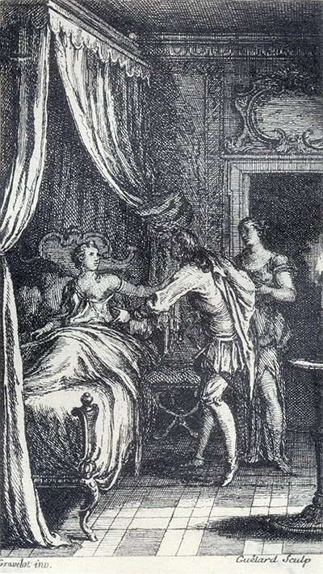
Gravure signée par Gravelot et Guélard
Daphnide au lit reçoit Alcidon introduit par Délie vêtue en nymphe (III, 3, 82 recto)
L'AstréeIII, 3. Édition Vaganay**, 1925Gravure signée par Gravelot et Guélard
Daphnide au lit reçoit Alcidon introduit par Délie vêtue en nymphe (III, 3, 82 recto)
(Voir Illustrations)
Éd. de 1619, 55 verso.
Éd. Vaganay, III, p. 81.
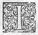
JE ne sais, Madame, si vous ne reconnaîtrez plus cette écriture, ou si vous aurez encore mémoire du nom d'Alcidon tant mes
sa faute, si de fortune je le voyais bien embarqué à m'aimer. En cette résolution je lui écrivis telles paroles :
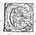
C
E n'est pas l'amour mais la curiosité qui me conseille de vous permettre de me voir ; ne prenez donc point le congé que je vous en donne à votre avantage ! Mais soyez meilleur ménager de la faveur que vous recevez d'elle que vous n'avez été de celles que votre
enfance vous a fait
avoir de moi. Et Adieu.
I.
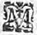
M
Ortels, je ne suis pas ce foudre épouvantable
Dont s'arme Jupiter, et se rend redoutable,
Lorsque tout en colère il tonne dans les Cieux,
Mais ce foudre d'Amour, plein d'éclairs et de flammes,
Qui ne suis élancé que par le clin
Dont Amour va brûlant les généreuses âmes.
II.
Je ne fais mes efforts sur un
Ni dessus un écueil, l'horreur de quelque
Ni sur un corps humain, acte plein de rigueur.
La butte de mes coups n'est chose si petite ;
Sans point toucher le corps, je sais blesser le cœur,
Et parmi tous les cœurs, celui qui le mérite.
Dont s'arme Jupiter, et se rend redoutable,
Lorsque tout en colère il tonne dans les Cieux,
Mais ce foudre d'Amour, plein d'éclairs et de flammes,
Qui ne suis élancé que par le clin
η des yeux,Dont Amour va brûlant les généreuses âmes.
II.
Je ne fais mes efforts sur un
rochersauvage,Ni dessus un écueil, l'horreur de quelque
plage,Ni sur un corps humain, acte plein de rigueur.
La butte de mes coups n'est chose si petite ;
Sans point toucher le corps, je sais blesser le cœur,
Et parmi tous les cœurs, celui qui le mérite.
III.
Et voyez, ô Mortels ! de combien je devance
η
Du foudre accoutumé l'ordinaire puissance :
Il ne s'ose approcher des superbes Lauriers.
Et moi, tout au rebours, je ne frappe personne
Qui n'ait dessus le front par ses effets guerriers,
Des Lauriers mérité
η
la superbe couronne.
Les Contentements d'Amour
peu assurés.
I.
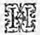
Hé pourquoi, ma Mémoire,
Maintenant de ma gloire
Te veux-tu souvenir,
Puisque par cette absence
J'ai perdu l'espérance
D'y pouvoir revenir ?
II.
Dis-tu pas que Madame
Conserve dans son âme
L'espoir de mon retour,
Et qu'il faut que de même
J'espère, si je l'aime,
De la revoir un jour ?
III.
Que comme la pensée
D'une peine passée
Plaît
η quand elle revient, Une gloire obtenue De même continue, Quand on s'en ressouvient.
IV.
Tais-toi, tais-toi, flatteuse.
En ma fortune heureuse,
Autrefois je me plus.
Mais ores l'ayant eue,
Le souvenir me tue
Du bien que je n'ai plus.
V.
Et que l'espoir encore
De voir ce que j'adore
IV.
Tais-toi, tais-toi, flatteuse.
En ma fortune heureuse,
Autrefois je me plus.
Mais ores l'ayant eue,
Le souvenir me tue
Du bien que je n'ai plus.
V.
Et que l'espoir encore
De voir ce que j'adore
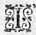
J'
Ai bien à ce coup occasion de me plaindre de ma fortune, me voyant délaissé en même temps de mon maître et de ma maîtresse (je ne sais, Madame,
s'il m'est encore permis de vous nommer ainsi). Mais aussi me dois-je bien louer d'elle, qui jugeant que c'est à tort que l'un et l'autre me traite
η de cette sorte, ne me veut laisser plus longtemps en vie pour ne me faire souffrir cet injuste supplice plus longuement.
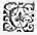
C
E porteur qui vous est allé chercher bien loin vous trouvera plus près, à
mon grand regret. Que je sache l'état de votre santé, si la mienne vous est chère.
C
'est à vous, Madame, à qui il faut demander des nouvelles de la santé d'Alcidon, puisqu'elle sera toujours toute telle qu'il vous plaira : si vous lui continuez l'honneur de vos bonnes grâces, il se porte bien ; autrement il n'est pas seulement
mort, mais il ne veut pas même avoir vécu.
S
'il est vrai qu'on juge autrui par soi-même, j'ai grande occasion de douter de la foi que vous m'avez promise, puisque vous faites un si mauvais jugement de la mienne. N'est-ce point que si vous étiez en ma place, l'ambition l'emporterait par-dessus l'Amour ? Ah ! non, je ne veux point même avoir
cette opinion de vous, car j'avoue, Alcidon, que si je l'avais, je ne vous aimerais point tant que je fais. Ne me faites non plus ce tort, si vous ne voulez que je croie que, de votre côté, vous commencez de diminuer l'affection que vous m'avez jurée.
N
ous commençons de faire la guerre, j'envoie deux coureurs
η
en vos prisons,
personne n'a encore parlé à eux, ils sont prisonniers à discrétion, traitez-les comme il vous plaira, je les vous
donne, comme je ferai tous les autres qui me tomberont entre les mains.
N'Aurai-je jamais autre nouvelle sinon qu'Alcidon se porte mal ? Ne le reverrai-je jamais tel qu'il était quand il entra dans l'aventure
η de la parfaite Amour ?
Et mes vœux ne seront-ils jamais exaucés, ou si les Dieux veulent éternellement demeurer sourds aux supplications que je leur fais pour sa santé ? Ô Dieux ! s'il doit être ainsi, abrégez mes jours pour abréger ma peine, ou changez-moi le cœur, afin qu'il ne soit pas si sensible pour lui. Et vous, Alcidon, ou résolvez-
vous à vous guérir, ou à me faire mourir de douleur.
Voilà pas, ô mon père ! la plus cruelle lettre que je pusse recevoir, après avoir découvert la trahison dont elle usait envers moi. Tout transporté de colère, je lui fis cette réponse :
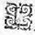
L
A guérison d'Alcidon ne dépend plus que de la mort, aussi n'ayant trouvé fidélité ni en son maître, ni en sa maîtresse, à quoi voudrait-il vivre plus longuement parmi les perfidies ? Et ne vous plaignez plus que les Dieux soient sourds : Ils ont enfin exaucé vos supplications, puisque ne voulant redonner la santé à celui de qui la vie ne vous pouvait plus servir que de regret d'avoir manqué à tant de serments inutiles, ils vous ont changé le cœur comme vous désiriez,
le rendant insensible pour moi, mais trop sensible pour un autre qui peut-être fera un jour la vengeance de tant de perfidies et de trahisons. Et tenez cet augure pour véritable, car les Dieux sont trop justes pour ne me venger et vous punir.
Fin du troisième livre.
Livre 2
Livre 4
Référence électronique :
document.write('"'+document.title.substr(0, document.title.indexOf("-")-1)+'". '+"Dernière mise à jour : "+ExtractDate(document.lastModified)+".")Deux visages de L'Astrée.
©2005-2020 E. Henein.
URL :
var today = new Date();
document.write(document.URL +
"<br>Consulté le : " + today.toLocaleDateString("fr-FR") + ".");
var _gaq = _gaq || [];
_gaq.push(['_setAccount', 'UA-19288475-1']);
_gaq.push(['_trackPageview']);
(function() {
var ga = document.createElement('script'); ga.type = 'text/javascript'; ga.async = true;
ga.src = ('https:' == document.location.protocol ? 'https://ssl' : 'http://www') + '.google-analytics.com/ga.js';
var s = document.getElementsByTagName('script')[0]; s.parentNode.insertBefore(ga, s);
})();
Deux visages de L'Astrée.
©2005-2019 Eglal Henein. Creative Commons 4 
Édition critique de la première partie de L'Astrée (1607, 1621)
mise en ligne le 9 avril 2007
Édition critique de la deuxième partie de L'Astrée (1610, 1621)
mise en ligne le 10 octobre 2010
Édition critique de la troisième partie de L'Astrée (1619, 1621)
mise en ligne le 1er novembre 2014
Édition critique de la quatrième partie de L'Astrée (1624)
mise en ligne le 15 janvier 2019
document.write("Dernière mise à jour : "+ExtractDate(document.lastModified))